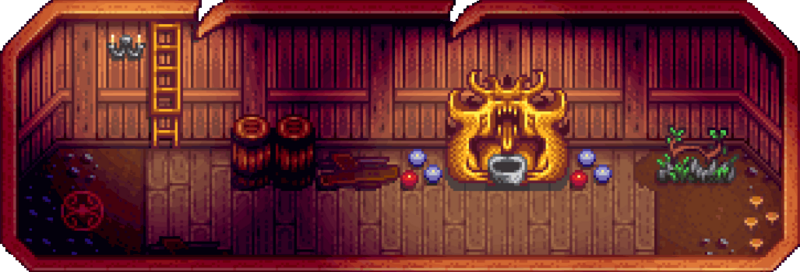
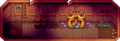

File:WizardBasement.PNG

{kind=link}
Size of this preview: 800 × 272 pixels. Other resolutions: 320 × 109 pixels | 1,027 × 349 pixels.
{kind=link}
{kind=link}
Original file (1,027 × 349 pixels, file size: 55 KB, MIME type: image/png)
Licensing
| This file (or parts of it) is copyright © ConcernedApe 2016
This screenshot, texture, audio, song, or other Stardew Valley asset, or derivative of Stardew Valley assets, does not fall under the Stardew Valley Wiki's Terms of Service but is freely usable on this wiki. |
File history
Click on a date/time to view the file as it appeared at that time.
| Date/Time | Thumbnail | Dimensions | User | Comment | |
|---|---|---|---|---|---|
| current | 19:57, 19 March 2024 |  | 1,027 × 349 (55 KB) | Margotbean (talk | contribs) | 1.6 image |
| 15:39, 7 September 2018 |  | 716 × 313 (113 KB) | Margotbean (talk | contribs) | transparency | |
| 20:43, 29 September 2016 |  | 482 × 216 (171 KB) | Katzeus (talk | contribs) | Basement room with teleporter to the Witch's Hut | |
| 20:05, 15 March 2016 |  | 968 × 424 (119 KB) | Sum2k3 (talk | contribs) | ||
| 06:58, 8 March 2016 |  | 595 × 291 (398 KB) | SyranoPlays (talk | contribs) | Basement that you are able to visit after becoming trusted by the Wizard. |
You cannot overwrite this file.
File usage
The following 2 pages use this file:
{kind=link}